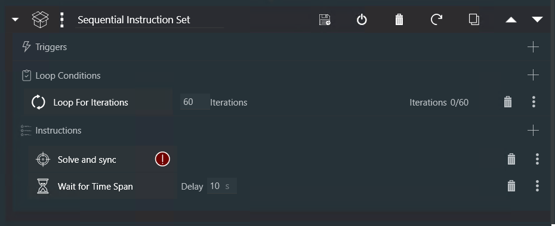
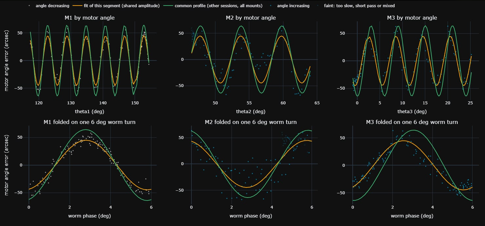
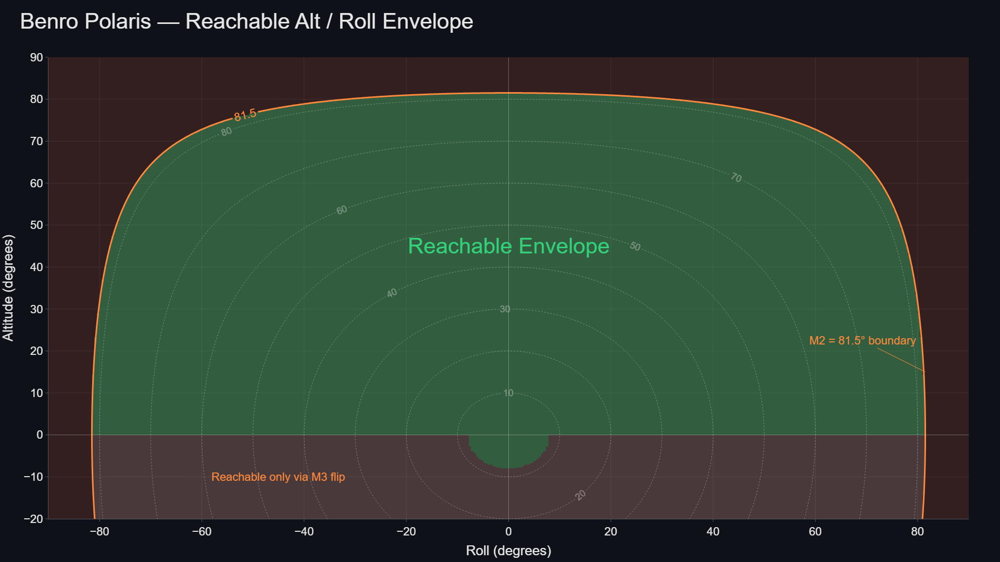

Alpaca Benro Polaris Driver — Kinematics Reference¶
Overview | QUEST | SCC | MAC | Sync Guiding | Pulse Guiding | PEC | Backlash | Envelope | Base Frame | Topo Frame | Equatorial Frame | Forward Flow | Inverse Flow | Feed Forward |
1. Overview¶
The Benro Polaris is a three-axis motorised camera mount designed for precision tracking and pointing. Accurate operation requires compensating for multiple sources of mechanical, optical, and dynamic error while transforming between four distinct reference frames: the camera sensor frame, the mount base frame, the local sky frame, and the celestial reference frame. This document defines these reference frames, along with the variables, rotation matrices, and quaternions associated with each, and describes the kinematic chains that relate them.
The document also outlines the principal mitigation techniques used to reduce tracking and pointing errors, including alignment correction, calibration, guiding, and dynamic compensation methods. These error sources and their corresponding mitigation strategies are summarised in the table below.
| Category | Error Type | Specific Cause | Description and Effect | Mitigation |
|---|---|---|---|---|
| Measurement Errors | Sensor Noise | IMU / Encoder Noise and Drift | IMU or encoder noise introduces inaccurate motion estimation, causing small random pointing fluctuations. | Kalman Filter (v2.0) |
| Physical Errors | Polar Misalignment | Tripod Bearing | An inaccurate tripod bearing introduces a rotational offset around the vertical axis, causing systematic pointing errors across the sky. | Multi-Point Alignment (QUEST v2.0) |
| Physical Errors | Polar Misalignment | Tripod Tilt | A tilted tripod means the mount's azimuth axis is not truly vertical, causing the effective polar alignment to vary across different pointing positions. | Multi-Point Alignment (QUEST v2.0) |
| Physical Errors | Polar Misalignment | Cone Error | A misalignment between the camera boresight and other axes means the boresight traces a small circle around the true target position rather than pointing directly at it. The resulting pointing error varies systematically with Az/Alt. | Multi-Point Alignment (QUEST v2.0) |
| Physical Errors | Roll Angle Misalignment | Mount Encoder / Camera Orientation Offset | A fixed offset between the mount's reported roll angle and the true camera orientation on the sky. If uncalibrated, corrupts the PID roll setpoint and subtly degrades pointing and tracking across all coupled axes. | Position Angle Sync (v2.0) |
| Physical Errors | Motor Offsets and Scale | M2/M3 Zero Offsets, M2 Scale | Offsets in M2's and M3's angles (or the camera tilted on the head) and M2 turning slightly further than reported create pointing errors that vary with pointing direction. | Mechanical Alignment Correction (MAC v2.2) |
| Dynamic Errors | Motor Backlash | Loose Gear Mesh / Gear Play | Mechanical slack causes delayed or reversed response during direction changes, particularly affecting pulse guiding corrections. | Speed Controller defaults to continuous Motor Engagement (v2.0) |
| Dynamic Errors | Slew and Center Cycling | Local Residual Pointing Error | After QUEST alignment, a small residual pointing error remains at the last sync point due to the global nature of the QUEST fit. This can cause Slew and Center to continuously cycle to reach the target orientation | Slew and Center Correction: Zero Last Residual (ZLR), Local Gaussian Adjustment (LGA), or Sync Guiding Adjustment (SGA) (v2.2) |
| Dynamic Errors | Post-Slew Motor Oscillation | Motion Dynamics and PID Tuning | After a slew, the PID controller requires time to stabilise at the new position. Starting an exposure before settling completes may cause plate solves to fail or star trails on the first image. | Nina Settings: Settle Time and Pointing Tolerance; Pilot Settings: Kc Goto Tollerance (v2.0); Goto Progress (v2.2) |
| Dynamic Errors | Tracking Motor Oscillation | PID Steady State | A slight timing shift between measurement and control can cause a periodic jump in motor control to catchup. | Synchronous Control (v2.2) |
| Dynamic Errors | Kinematic Constraints | Motor Axis Solution Choice | Some pointing orientations have multiple solutions and may effect slew duration, windup limits, and motion paths. | Motion Planner (v2.2) |
| Dynamic Errors | Kinematic Constraints | Gimbal Lock / Axis Range | Certain pointing orientations can introduce gimbal lock or near-singular kinematic configurations, resulting in the loss of a degree of freedom and reduced controllability. | Kinematics Refactor (v2.2) and Gimbal Lock Status Indication (v2.2) |
| Guiding Errors | Tracking Drift | Drift During Exposure | Tracking drift accumulates during longer exposures due to Periodic Error, RA/Dec drift, and residual alignment errors. Long exposures require correction while active. | Pulse Guiding (v2.0) with Guide Camera and PHD2 or equivalent |
| Guiding Errors | Tracking Drift | Drift of Celestrial Pole | In v2.0 Guide Pulses changed target setpoints (SP), causing the PID to track a different RA/Dec location, effectively drifting the celestrial pole. In v2.2 all auto-guiding commands now change the target's present values (PV) instead. | Pulse Guiding (v2.2) |
| Guiding Errors | Tracking Drift | Drift Between Plate Solves | Tracking drift accumulates even further over extended imaging sessions, potentially losing the target as it drift out of frame. | Sync Guiding (v2.2) no guide-camera needed |
| Guiding Errors | Periodic Error | Slow Changing Drift | The alignment and pointing model are never perfect, so the target drifts slowly in RA and Dec; the drift rate changes as the mount moves across the sky and the night progresses. | PEC Drift Correction (v2.2): an exponential moving average of the drift rate (about 7.5 min) learnt from Pulse or Sync Guiding corrections |
| Guiding Errors | Periodic Error | Worm Gear Imperfections | Each motor's worm gear (6 degree, 60 teeth) wobbles its axis by about 30-150 arc seconds, repeating every 6 degrees of that motor's rotation: a few minutes for a fast-moving motor, hours for a slow one. Its phase is fixed to the motor angles, so it repeats night to night. | PEC Worm Gear Correction (v2.2): a fixed per-motor profile measured by the M1-M2-M3-WORM-PROFILE calibration test, applied without guiding |
| Guiding Errors | Load Slip | Heavy Payload on M2 | M2 carries the camera, lens and the M3 Astro Module off its axis, which is hard to balance. With a heavy lens (e.g. 300 mm f/2.8, 2.4 kg), while M2 slowly lifts the payload, M2 creeps ahead then slips back about 20 arc seconds every 10-40 seconds, giving regular guiding kicks in RA and Dec (seen as 8" RMS vs 2.4" without). | Zero M2 Roll (v2.2): the ZM2 preset on the Dashboard's Roll dial selects a roll angle that minimises M2 movement over the next 120 minutes, helping to reduce tracking disturbances. |
| Optical Errors | Focus Drift | Temperature / Mechanical Changes | Temperature or mechanical changes alter optical focus during imaging, degrading star shape and plate solve reliability. | NINA Hocus Focus Plugin |
| Optical Errors | Lens Tilt | Sensor / Lens Plane Non-Parallelism | A tilt between the camera sensor plane and the optical focal plane causes uneven focus across the image and elongated or bloated stars in the corners | Aluminium Foil Tape |
2. Kinematics Corrections¶
The Alpaca Driver achieves superior tracking performance through a multi-layered suite of kinematic corrections that address both global and local mechanical errors. At its foundations is the QUEST model in Multi-Point Alignment. Layered on top of this are corrections for Mechanical imperfections, Periodic and Local residual errors.
2.1 QUEST Alignment Optimisation¶
I. What it is and What it Solves¶
QUEST (QUaternion ESTimator) is an advanced mathematical framework used in Multi-Point Alignment (MPA) to calculate the most accurate relationship between your Polaris mount and the night sky. In the context of the Alpaca Driver, it is a closed-form, quaternion-based solution designed to solve "Wahba’s problem": determining the optimal rotation that aligns a set of predicted sensor vectors with observed "ground-truth" vectors from plate solving.
Because the Benro Polaris is an Alt/Az/Roll mount, it lacks a physical axis naturally aligned with Earth’s rotation. This makes tracking complex, as all three motors must coordinate perfectly to follow a target. QUEST solves several critical hardware and environmental challenges that standard software cannot:
- Mechanical Imperfections: It compensates for cone error, polar misalignment, and general mechanical offsets.
- Tripod Tilt: A major advantage of QUEST is that users no longer need to obsess over leveling their tripod, as the model mathematically detects and corrects for tilt.
- Tracking Accuracy: It minimizes the angular residuals (errors) between where the mount thinks it is pointing and where it actually is, leading to superior sidereal tracking for long-exposure deep-sky photography.
II. Integration with Single Point Alignment (SPA)¶
The Alpaca Driver supports two distinct modes: Single-Point Alignment (SPA) and Multi-Point Alignment (QUEST/MPA).
- SPA (The Foundation): This mirrors the standard Polaris method by syncing to one known celestial position. While simple, it relies on precise tripod leveling and is highly susceptible to drift because it cannot account for complex geometric errors.
- QUEST (The Advanced Layer): QUEST fits "on top" of the basic alignment by utilizing three or more sync points to build a detailed 3D correction model. Instead of a single global offset, QUEST finds the optimal rotation (alignQ_B2T) that transforms the mount's "Base Frame" into the true "Topocentric Frame" (the actual sky).
By using QUEST, the driver can correct for the fact that a sync point taken in the East might require a slightly different correction than one taken in the West due to tripod tilt or mechanical flex.
III. The Mathematics of the Model (Briefly)¶
QUEST operates by minimizing a quadratic loss function, which is essentially the sum of the squared differences between pairs of reference vectors (stars) and measured vectors (mount sensors).
- Vector Pairing: Each sync point provides a pair of vectors: the predicted direction from the mount's internal sensors and the observed direction from a plate solve.
- Davenport Matrix: The algorithm constructs a specialized matrix (known as a Davenport Matrix) from the weighted outer products of these vector pairs. With Mechanical Alignment Correction on, the rotation is instead fitted together with the M2/M3 offsets, unweighted (see 2.3).
- Eigenvector Solution: The "optimal" alignment is found by identifying the eigenvector with the largest eigenvalue of that matrix. This provides a unit quaternion that represents the best-fit rotation for the entire system.
IV. How to Use QUEST and Get the Best Results¶
To achieve high-precision results, you must move from simply "syncing" to strategic modeling:
- Enable MPA: Ensure Multi-Point Alignment is enabled in the Alpaca Pilot App settings or alignment page.
- Point Selection (The Rule of Three): You must provide at least three sync points to allow the QUEST algorithm to begin building a model.
- Strategic Geometry:
- Celestial Pole: Always perform a plate solve and sync at the Celestial Pole (North or South). This ensures the model has an anchored reference for Earth’s rotation axis.
- Target Trajectory (DSO Arc): For the highest accuracy during imaging, place additional sync points along the trajectory (arc) that your target object will follow during the night. QUEST provides the best results when it is interpolating between points rather than extrapolating far away from them.
- Monitor Residuals: Use the Alignment page in Alpaca Pilot to review "model residuals". This shows how well the QUEST model fits each sync point. Aim for residuals in the arc-seconds; if a point shows residuals of whole degrees, it should be deleted as it is likely a bad solve.
- Persistence: From version 2.2 onwards, your QUEST model is saved to disk. You can restart the driver or your MiniPC mid-session without losing your refined alignment.
2.2 Slew & Center Correction¶
I. What it is and What it Solves¶
In astrophotography, the Slew & Center operation is a critical workflow where the mount slews to a target, performs a plate-solve to verify its position, and then makes a corrective slew to center the object, repeating the process until it is centered perfectly. The primary aim of Slew & Center Correction is to speed up this process by reducing the number of correction slews needed to zero in on a target.
Without this correction, even a high-quality global alignment model (like QUEST) may have a small residual error at any given sky position. When a controlling application (such as NINA) performs a corrective slew based on a residual error, it may require several iterations to narrow in on the target. If the residual at the target is large and you have configured a very low pointing tollerance, the Slew & Center operation may struggle to complete.
II. The Challenge: Global vs. Local Accuracy¶
The QUEST algorithm finds a global optimum by fitting a single rigid-body rotation across all available sync points. While this provides excellent average accuracy across the entire sky, it cannot perfectly satisfy every individual sync point simultaneously.
This leaves a residual pointing error, the difference between the model's predicted position and the actual observed plate-solved position. To achieve near-instant centering, the driver must account for this residual immediately after a sync occurs.
III. Three Approaches to Correction¶
The Alpaca Driver utilizes three distinct strategies to handle these residuals, ensuring the mount's "Present Value" matches the sky as accurately as possible:
-
Zero Last Residual (ZLR): In this approach, the driver forces the QUEST model to ensure the last sync point always has a zero residual. When a new sync is performed, the model essentially "shifts" its understanding of the sky so that the current orientation is perfectly anchored to the observed coordinates. This provides an immediate, absolute correction for the current target but can affect the global fit of the rest of the model.
-
Local Gaussian Adjustment (LGA): LGA is a more advanced method that corrects the residual locally around the most recent sync point without disrupting the global integrity of the QUEST model. It applies the full correction at the exact sync location, then gracefully fades that correction both spatially and temporally. As the mount moves aways from the last sync point (σ = 10 degrees), the adjustment automatically decays back to the pure QUEST model. This ensurs the system smoothly returns to the underlying global solution.
-
Sync Guiding Adjustment (SGA): (Recommended) SGA leaves the QUEST model unchanged and instead offsets the pointing by the error left at the last sync. After each alignment sync, the residual at that point becomes a correction applied to everything the mount does, so a corrective slew lands where the plate solve says it should.
- It does not need Sync Guiding. The name comes from the correction it uses, which it shares with Sync Guiding; it works the same with Sync Guiding on or off, with pulse guiding (PHD2's corrections are applied on top, separately), or with no guiding at all.
- It builds on itself. With Sync Guiding on, further syncs on the same target refine this same correction instead of adding alignment points, and PEC Drift Correction folds its corrections into it too.
- It lasts until it is replaced. The next alignment sync sets a new offset; a goto or slew keeps it (so the next Slew & Center benefits); turning tracking off or changing the alignment or Slew & Center settings clears it.
- Unlike LGA, it does not fade with distance: after slewing far from the last sync point the offset still applies until the next Slew & Center sync replaces it, which is normally the first plate solve at the new target.
IV. The Mathematics of LGA¶
LGA uses a Gaussian weighting function to determine how much of the local residual should be applied based on the angular distance from the last sync point. The correction fades to identity (zero additional correction) as the distance increases.
The formula for the weight is:
weight = exp(−angular_distance² / (2 · sigma²))
- angular_distance: The angular separation between the current pointing orientation and the orientation recorded at the last sync point.
- sigma: This is the "spread" of the correction, with a default value of 15°.
- At the Sync Point: The weight is 1.0, meaning the full residual correction is applied.
- At 15° Away: The weight drops to approximately 0.61 (61% correction).
- At 30° Away: The weight drops to approximately 0.14 (14% correction).
- Beyond 45°: The weight is less than 0.05, meaning the LGA is effectively inactive and the mount relies solely on the QUEST model.
V. Operational Benefits¶
- Faster Centering: By eliminating the local residual at the target, the first "corrective slew" issued by imaging software is more accurate.
2.3 Mechanical Alignment Corrections (MAC)¶
I. What Is MAC?¶
Mechanical Alignment Correction (MAC) improves pointing accuracy by modelling mechanical errors that a standard QUEST alignment cannot correct.
QUEST determines the overall fixed-body rotation between the mount and the sky, correcting for tripod tilt, levelling and the North reference. However, it cannot correct errors that change with the mount's position.
On the Benro Polaris, these errors include:
- M2 and M3 zero offsets: Small differences between the reported motor angles and the actual camera orientation. These can change when you change lenses or reseat the camera.
- M2 scale error: M2 may rotate slightly more or less than its reported angle indicates, causing pointing error to increase the further M2 moves from its mid-range.
MAC models these errors alongside the QUEST alignment, improving pointing accuracy across the sky rather than just near individual alignment points.
II. How to Get the Best Results¶
Enable MAC and sync at six or more well-spaced points. QUEST and the M2/M3 offsets work from three well-spread points; the M2 scale needs six or more.
For best results:
- Enable Mechanical Alignment Correction in Pilot's Settings.
- Collect at least 6 sync points, spread across different altitudes and azimuths.
- Spread them at least 20° in altitude (the M2 range) so the driver can fit the M2 scale.
- Avoid clustering all sync points in one small region of the sky.
No separate mechanical calibration is required. The driver fits the M2 and M3 offsets during multi-point alignment and refines the M2 scale when sufficient data is available.
III. What Improvements Can You Expect?¶
MAC can substantially improve pointing accuracy, reduce centring iterations and reduce position-dependent drift during tracking.
Replay tests using 47 archived alignments from four mounts, with approximately 1,300 sync points, showed:
| Measurement | MAC off | MAC on |
|---|---|---|
| Median predicted goto error | 59.2′ | 9.6′ |
| Better results across archived alignments | 2 of 47 | 45 of 47 |
In these tests, MAC also reduced typical alignment residuals from tens of arcminutes to a few arcminutes. Actual results depend on the mount, lens, sync-point distribution and observing conditions.
MAC reduces systematic pointing errors across the sky, leaving less for Slew & Center and guiding corrections to compensate.
IV. Checking the Alignment Model¶
The Alignment page displays the Telescope Alignment Model card, including the status of each mechanical correction:
- M2 and M3 Offsets - Fitted or Default: Whether the M2 and M3 offsets have been fitted from the collected sync points.
- M2 scale - Fitted, Held or Default: Whether the scale has been updated, retained from an earlier fit, or is still using its default value.
- Guidance: Suggestions for improving the model, such as adding sync points or increasing their spread.
With MAC enabled, the driver retains up to 20 sync points, compared with 10 when MAC is disabled. When the limit is reached, the oldest point is normally replaced, while the highest and lowest M2 points are preserved to support M2 scale fitting.
V. Understanding the MAC Model¶
MAC corrects the reported M2 and M3 motor angles before the driver works out where the camera points:
The model has three correction terms:
- M2 and M3 offsets: Constant adjustments to each motor's reported angle. These are fitted automatically alongside the QUEST rotation during Multi-Point Alignment. They account for setup-dependent differences, such as changing lenses or reseating the camera.
- M2 scale: Corrects for M2 rotating slightly more or less than its reported angle indicates. The correction is measured relative to M2's mid-range (45°). It is primarily a mount characteristic, though the lens and setup can also have an effect. Measurements on tested mounts have typically ranged from +0.3% to +2%.
Automatic M2 scale fitting: The driver refines the M2 scale once the alignment contains at least 6 sync points spanning 20° or more in M2. A new value is accepted only if it significantly improves the fit and falls within the permitted range of −2% to +4%.
The default M2 scale correction is +1.0%. An accepted value is saved with the alignment for subsequent sessions. Switching to Single-Point Alignment resets it to the default.
All three corrections are managed automatically; no manual calibration is required.
VI. Comparing MAC On and Off¶
The Mechanical Alignment Correction toggle in Pilot's Settings allows you to compare the standard QUEST alignment with MAC using the same sync points.
- MAC on: Fits the QUEST rotation together with the M2 and M3 offsets and, when sufficient data is available, the M2 scale.
- MAC off: Uses the standard QUEST rotation alone.
Note: MAC improves the underlying alignment model but does not eliminate all pointing errors. Slew & Center and guiding remain useful for correcting remaining residual errors.
2.4 Plate-Solved/Sync Guiding¶
I. What it is and What it Solves¶
Plate-Solved/Sync Guiding is an innovative, hardware-free approach to auto-guiding that eliminates the need for a separate guide scope and camera. It solves the persistent problem of tracking drift and periodic error in the Benro Polaris by using the main imaging camera to periodically update its dynamic local alignment model.
Traditionally, the Polaris suffers from periodic error (PEC), mechanical oscillations caused by gear irregularities, which have been measured at approximately 14+ arc minutes with a primary period of 35 minutes. Without constant correction, this error leads to noticeable star trails and tracking drift during long exposures. Plate-Solved/Sync Guiding solves this by integrating periodic plate-solve data directly into the motion control loop, acting as a high-precision pulse guide without additional hardware.
II. The Mechanism: From Sync to Pulse Guide¶
The core of this feature lies in how the Alpaca Driver interprets synchronization commands. When a user performs a plate-solve sync without slewing the telescope, the driver no longer treats it a new position to add to the QUEST model.
Instead, the driver interprets the resulting residual error as a guiding correction. Each of these guiding corrections feed into PEC's drift model (an exponential moving average of the drift rate) to predict the local RA and Dec drift rates. The PID Controller then applies these drift rates every 200ms as a continuously refining quaternion correction. This integrated model addresses both local alignment issues and the long-term periodic error cycle simultaneously, ensuring the mount's "Present Value" is continuously refined to match the true sky, even between each plate-solve.
III. Integration with QUEST and PID Control¶
This guiding method allows the QUEST (QUaternion ESTimator) algorithm to function at its highest potential.
- Dynamic Refinement: By feeding the model fresh "ground-truth" data every few minutes, any local errors can be corrected for dynamically.
- Drift Reduction: The residual data is fed into the PID Controller, which automatically adjusts motor speeds to "kill" the drift.
- Reduced Star Trails: By proactively correcting for the worm gear error and inherent drift, exposures remain sharp even during lengthy imaging sessions.
IV. Recommended Workflow: The Plate-Solve/Sync Guiding¶
To get the best results and maintain perfect centering without manual intervention, a simple automated workflow is recommended:
- Reset Multi-Point-Alignment - To reset MPA, clear all old Sync points, or toggle MPA off then back on (this will clear all sync points). Enable Tracking.
- Perform Multi-Point-Alignment - Slew and capture at least three sync-points. Ideally, at your celestial pole and along the future path of your DSO Target.
- Slew and Center on your target - Use Nina to Slew and Center on your target.
- Initialise Sync Guiding Model - On the Nina Image tab, use the Plate Solving Tool to manually perform several plate-solves, 30s apart. This is optional, but it can help initialise the PEC model faster.
- Configure your capture session - Use Nina's Advanced Scheduler to perform "Smart Exposures", then a "Solve and Sync" every 1 to 3 minutes.
Note: Don't use Sync Guiding at the same time as Pulse Guiding. The guider holds its guide star at the lock position it set when guiding started, so it pulls each sync correction straight back, and the target drifts off center anyway (e.g. from flexure between guide scope and main scope). To keep the target centered during a long Pulse Guided session, use Nina's Center After Drift trigger instead. When the plate solve drifts past the threshold (about 0.3–0.5 arcmin), Nina stops guiding, re-centers the target, and restarts guiding with a new lock position. Each re-center is a slew, which resets the driver's PEC model, so avoid setting the threshold too tight.
V. Primary Benefits¶
- No Additional Hardware: Eliminates the cost and weight of a dedicated guide scope and camera.
- Superior Accuracy: Plate-solves provide significantly more information and higher resolution than traditional guide star pulses.
- Streamlined Operations: No more repetitive "Slew and Center" iterations are needed; the guiding happens "in-place" as part of the normal imaging sequence.
2.5 Pulse Guiding¶
I. What it is and What it Solves¶
Pulse Guiding is a high-speed feedback mechanism that allows external guiding software to make micro-adjustments to the mount's tracking in real-time. While QUEST Alignment and Mechanical Corrections provide a robust global model, they cannot account for dynamic, unpredictable factors such as atmospheric refraction, subtle mechanical "sticktion," or high-frequency periodic error.
Pulse guiding solves these issues by acting as a fine correction tool. It continuously monitors the position of a guide star and sends small "pulses" to the driver to nudge the mount back into perfect alignment, ensuring that the imaging target remains stationary on the sensor at a sub-pixel level.
II. The Mechanism: From Pulse to Motion¶
The Alpaca Driver exposes pulse-guiding commands through the ASCOM Alpaca ITelescopeV3 Interface. When a guiding application (like PHD2) detects a deviation, it calculates the required correction and sends a pulse of a specific duration and direction to the driver.
The driver interprets this input as a corrected position change. In the PID control loop, this appears as a "jump" in RA and/or Dec co-ordinates in proportion to the duration of the pulse and the pulse guide rate. This allows the driver to translate equatorial corrections into coordinated, multi-axis motor movements (M1, M2, and M3) without interrupting the underlying sidereal tracking.
III. The Mathematical Model (Briefly)¶
Starting with version 2.2, the driver utilizes a refined mathematical approach to ensure these pulses are executed with extreme fidelity:
- PID Feed-Forward Control: The driver incorporates feed-forward logic specifically for pulses, allowing the motors to reach the required correction velocity almost instantaneously.
- Integral Suspension: To prevent "overshoot"—where the mount continues moving after a pulse ends—the driver temporarily suspends the integration of the error term (KI) during an active pulse. This ensures the correction is crisp and does not introduce new oscillations.
IV. How to Use and Get the Best Results¶
For a comprehensive guide on hardware selection and software configuration, please refer to the Guiding Users Guide (guiding.md). To optimize the kinematic response of pulse guiding:
- Set the Guide Rate: A guide rate of 0.75x to 1.0x sidereal is recommended. If the mount appears to "hunt" or oscillate, lowering this rate in the Alpaca Pilot settings can smooth the response.
- Multi-Star Guiding: Always enable "Use Multiple Stars" in your guiding software. This averages out atmospheric turbulence (seeing), providing the PID controller with a cleaner signal that represents true mechanical drift rather than "chasing the wind".
- Monitor the PID Loop: You can visualize pulse commands in real-time on the PID Tuning page in Alpaca Pilot, where they appear as dynamic shifts in the RA and Dec setpoints.
- Don't Combine with Sync Guiding: The guider pulls each sync correction straight back to its lock position. To keep the target centered during a long session, use Nina's Center After Drift trigger instead (see the note in section 2.4, Recommended Workflow).
V. Primary Benefits¶
- Sub-Exposure Correction: The main benefit of pulse guiding is the ability to correct tracking errors within a single exposure. This prevents small drifts from turning stars into "footballs" or trails before the frame is completed.
- Longer Exposures: By eliminating cumulative drift, pulse guiding enables the Benro Polaris to maintain pinpoint stars over much longer imaging sessions than would be possible unguided.
- Reduced RMS Error: With a well-tuned PID loop and proper calibration, pulse guiding can reduce the mount's tracking error to an RMS of 1.5 to 3.0 arc-seconds, meeting the requirements for high-resolution deep-sky imaging.
2.6 Periodic Error Correction (PEC)¶
I. What is Periodic Error?¶
Periodic Error includes tracking errors that the mount cannot detect directly. On the Benro Polaris, there are two main sources of periodic error:
-
Slow changing drift: The alignment and pointing model are never perfect. As a result, the target gradually drifts in RA and Dec. The drift rate changes slowly as the mount moves across the sky and as the night progresses.
-
Worm gear error: Each motor drives its axis through a worm gear. Small irregularities in the gear cause the pointing to wobble by about 30-150 arc seconds. The wobble repeats every 6 degrees of each motor's axis rotation. Its period in time depends on motor speed: a few minutes for a fast-moving motor, or hours for a slow one.
Without correction, both errors produce irregular star shapes and trails, limiting exposure length.
II. How does the Driver correct for Periodic Error?¶
The driver addresses periodic error in two layers. Both are applied every 200ms:
- Drift correction learns and corrects the slow changing drift based on guiding corrections from either Pulse Guiding or Sync Guiding.
- Worm gear correction uses a fixed periodic correction profile for each motor of the mount (see section V).
Each layer has its own switch in Pilot's settings, PEC Drift Correction and PEC Worm Gear Correction (advanced_pec_drift, advanced_pec_worm), so either can be compared on and off. The PEC button on Pilot's status panel switches both together.
These two corrections allow PEC to anticipate the periodic errors and correct them before they become visible in the image.
III. Comparison with External Models¶
Software such as PHD2 provides its own "Predictive PEC". The Alpaca Driver's implementation is instead integrated directly into the Benro Polaris motion-control system, with knowledge of its kinematics and three axis worm gear design.
External models often operate only on the RA axis and may use slower correction cycles. The Alpaca PEC is fully integrated into the PID control loop, allowing it to correct all axes simultaneously.
IV. Drift Correction - Convergence¶
PEC does not immediately apply drift correction. As guiding corrections arrive, PEC estimates the current drift rate independently for RA and Dec. The estimate is smoothed over about 7.5 minutes using an exponential moving average (pec_tau_sec).
Incoming data used in the estimate is filtered, and the model must first demonstrate that it has converged.
-
Filtering Logic: Corrections not relevant for PEC are filtered out
- large corrections greater than 10 arc minutes are ignored. This prevents bad guiding measurements from "poisoning" the model.
- Pulse Guiding calibration corrections are also ignored. The driver detects when PHD2 or CCDciel are performing calibration steps and purposefully ignores them.
-
Convergence Requirements: PEC begins applying drift corrections to sidereal tracking only when all three conditions are met:
- Observations: At least 3 corrections have been received.
- Accuracy: The root mean square error (RMSE) is below 6 arc minutes.
- Reliability: The R-squared (R²) value is greater than 0.500.
Note: Drift Correction applies only when PEC Drift Correction is switched on.
V. Worm Gear Correction - Profile Calibration¶
The driver applies worm gear corrections once it has a profile of each motor's gearset. This correction is applied first and immediately, without requiring any guiding. Because the error is caused by the gears and its phase is relative to the motors' home position (0,0,0), it should repeat from night to night. Any remaining slowly changing drift is then learnt and corrected by PEC Drift Correction.
Note: Worm Gear Correction applies when PEC Worm Gear Correction is switched on and a
worm_profile.jsonexists (switched on without a profile, the driver logs a warning and corrects nothing). It is independent of the Drift Correction switch.
1. Worm Profile Calibration Test
The Worm Gear Profile is calibrated using a special speed calibration test called M1-M2-M3-WORM-PROFILE.
This test will move the mount to different positions up to ± 7.5 degrees from its current orientation. At each new position it will wait for a solve and sync to confirm the true pointing orientation. Each time it receives a solve and sync, it will move onto the next position.
Choosing the lens and camera for the test
Each plate solve measures where the mount really points. The worm errors are 30-150 arc seconds, so each solve should be accurate to about 2 arc seconds or better. A plate solve locates the field to roughly a fifth of a pixel, so what matters is the image scale (arc seconds per pixel):
- Image scale = 206 × pixel size (µm) / focal length (mm).
- 10"/px or finer is enough; 2-5"/px is ideal. For most cameras this means a 100-300 mm lens or scope.
- Finer than about 2"/px gains nothing. Seeing, mount settling and the fit itself then limit the result, while a smaller field needs longer exposures for enough stars, solves more slowly, is more sensitive to wind, and adds weight to the mount.
- Keep the field of view above about 1° so solves stay fast and reliable, and use short exposures (2-5 s) with plenty of stars.
| Camera (pixel size) | 50 mm | 100 mm | 200 mm | 300 mm |
|---|---|---|---|---|
| IMX585 (2.9 µm) | 12"/px | 6"/px | 3"/px | 2"/px |
| IMX533 / IMX571 (3.76 µm) | 15.5"/px | 8"/px | 4"/px | 2.6"/px |
| Typical DSLR (4.3 µm) | 18"/px | 9"/px | 4.4"/px | 3"/px |
For example, an IMX585 with a 200 mm lens gives 3"/px over a 3.2° × 1.8° field, which is well suited. A 50 mm lens will still complete the test, but with a less accurate profile.
To perform the worm profile calibration:
-
On Pilot's Settings page, set Focal Length and Focal Ratio to the lens you are imaging with, for example 200 mm and F4. Each test records them, so its results are pooled with the other tests for that lens and build that lens's own profile (see Profiles per lens below). If they are left at the defaults, the test is filed under the wrong lens.
-
Point the mount at a patch of sky 30-45° above the horizon in the eastern or western sky: Azimuth roughly 45-135° (east) or 225-315° (west), as shown in Pilot. Avoid due north or south and the area around the celestial pole. Choose a field with plenty of stars and about ±9° of clear sky around it (no trees or buildings), as the test moves the mount up to 7.5° each way.
-
In NINA (or similar), create a looping sequence of around 60 iterations.
- On the equipment tab, connect the Camera, then connect the Mount to the Alpaca Driver
- On the options/plate-solve tab, set your plate-solve exposure time to 1s
- Using the Advanced Sequencer create a Squential Instruction Set
- Set the Loop condition to "Loop for Iterations", 60 times
-
Within the loop add instructions
- Run a repeating Solve and Sync using the short exposures.
- Add a Wait for Time Span of around 10 seconds between syncs to allow the mount to settle. If the test log shows many syncs discarded as "motors not settled", increase it slightly.

-
Start the sequence of solve and syncs, and keep the sequence running until the test finishes.
-
On the Alpaca Pilot, change to the Speed Calibration page, and select the M1-M2-M3-WORM-PROFILE test case, then press Test and confirm the execution. This one test measures all three motors, and takes about 20 minutes to complete.
-
The driver will enable tracking and rotate to Roll ±45° (on the side of 0 the camera is already on, keeping the same Az/Alt, and back again when the test finishes): at ±45° M1 and M3 move the view in clearly different directions, so their worms separate well. It also keeps each motor's steps within what it can reach at this pose. It will then take measurements at 51 different positions (50 steps). Steps that go against a motor's tracking direction overshoot and come back, so the mount may move twice per step. The status shows progress, for example
PENDING 12/51.
While the test is running:
- Your syncs are used only as measurements. They do not change the pointing model.
- Any existing PEC, worm gear correction and Backlash Compensation are paused (the test approaches each position the tracking way and measures each motor's backlash itself).
- Don't guide, slew, park, or jog the mount. Any of these actions stops the test.
- If no Solve and Sync arrives for 1 minute, the test stops with NO DATA.
- You can press Stop at any time.
When the test finishes: stop the Solve and Sync loop; syncs after the test are ordinary alignment points.
2. Review the result.
Every test and its measurements are retained in the history. Only approved tests contribute to the worm gear profiles used by the driver. The driver pools up to five of the most recent approved tests to produce a more reliable estimate of each motor's worm gear error.
The results show the current correction profile alongside the profile re-calculated with the latest test included.
The results are displayed in columns, with one line per motor under each heading.
-
Baseline:
current profile: The correction profile the driver uses for the lens set in Pilot's settings: that lens's own profile, otherwise the closest lens's, otherwise the generic profile. It is applied when PEC Worm Gear Correction is enabled. Before any test has been approved, this shows none. -
Test Result:
last testorlast N tests pooled: The estimated worm gear error calculated from the test data. With only one test, the result is based on that test alone. Otherwise, it combines the latest test with the existing approved tests, using up to five tests in total (up to five in each direction for a motor split by direction, see below). This is the profile that would be used if the latest test were approved.For each motor, the result shows the estimated wobble amplitude and the worm angle at which the error peaks.
For example:
M1 21"@177,M2 86"@179,M3 85"@224. The value before @ is the estimated error amplitude in arcseconds; the value after @ is the angle, from 0° to 360°, within the motor's 6° worm cycle where the error is largest. The angle is relative to the worm's rotational position.A motor marked
off, such asM3 off, has no correction because its worm gear error could not be measured reliably. This may mean the wobble is too small to measure or there is insufficient data. Additional tests may help identify it. If a motor remains off after five tests, its worm gear error may simply be negligible, which can be a sign of a good-quality mount. -
Change:
from baseline: The difference between the Test Result and the Baseline for each motor. It shows how much the correction would change if the new result were adopted. Once the new profile becomes the current profile, the change is shown as +0".A warning line beginning with ⚠ indicates a problem with the latest test, such as a poor fit or insufficient separation between M1 and M3 at the test position (low separation). Repeat the test at a different mount position to improve the measurement.
-
Test Stdev: Shows how well the worm gear model fits the measurements and how precisely each motor's wobble has been estimated.
For example, a pooled result might show:
pooled 19.4" rms, thenM1 ±3.9" 5.4σ,M2 ±3.7" 23.2σ,M3 ±3.1" 27.4σ. These values describe the Test Result, not the Baseline.pooled 19.4" rmsis the root-mean-square (RMS) residual: how far the individual plate-solve measurements typically fall from the fitted model. Seeing, wind and small pointing errors all contribute. The pooled fit allows an RMS of up to 25".- Individual test quality: Each test must have an RMS below 20" to contribute to the pooled result. If the latest test exceeds this threshold, it remains in the history but is excluded from the pool. For example:
⚠ last test left out: 24.1" rms - Single-test results: When only one test is available, the first line shows its RMS, such as
last test 11.9" rms. If the test stopped before completing all 50 measurement positions, the line also shows how many were measured, such as31 positions. At least 16 positions are required for a test to be used. -
±3.1"is the estimated uncertainty in the motor's wobble amplitude. For example, 85" ±3.1" means the estimated wobble is 85 arcseconds, with an uncertainty of approximately 3.1".Why is the wobble uncertainty smaller than the plate-solve RMS? The RMS measures the typical residual error of individual plate solves. The ± value estimates how precisely the wobble amplitude has been determined from all the measurements. Combining measurements helps random noise average out, so the amplitude can be estimated more precisely than the residual error of an individual measurement. With up to 250 positions across five tests, the uncertainty can be substantially smaller than the RMS.
-
σ(sigma) indicates how clearly the measured wobble stands out from its uncertainty. It is the estimated amplitude divided by its uncertainty. For example, M3 at 85" ±3.1" has a significance of approximately 27.4σ, strong evidence that the wobble is real.A motor receives a correction only if its measured wobble reaches 4σ or higher. Below this threshold, the wobble cannot be distinguished reliably from noise, so the Test Result shows
off.Higher sigma values indicate greater confidence in the measurement. A motor just above the threshold, such as M1 at 5.4σ, has a measurable wobble, but its estimate is less robust. Additional tests or a test at a different mount position may improve confidence.
-
Status:
COMPLETED— the measurements fitted cleanly and at least one motor's wobble was measured clearly (pooled over the recent tests).POOR FIT— no wobble could be distinguished reliably from noise, or the measurements scattered too much (e.g. wind, backlash).NO DATAorSTOPPED— too few plate solves were received.
Running the test again at a different pose reduces the effect of measurement noise.
Forward and reverse profiles.
A motor's worm gear error can differ depending on its direction of rotation because the load rests against a different side of the gear teeth. On the test mount, for example, M2 measured approximately 90" of wobble in the forward direction and 35" in reverse.
While tracking, a motor may turn predominantly in one direction for an extended period. A single profile that averages both directions can therefore under-correct in one direction and over-correct in the other.
The driver checks for this effect separately for each motor. Every test records the direction in which each motor was tracking. Once a motor has at least three tests in each direction, the driver fits separate forward and reverse profiles using the measurements from those tests.
If the two profiles differ significantly, by at least 3σ and at least 15", the motor receives separate directional corrections. Otherwise, it retains a single profile.
Test Result then shows both, for example M2 fwd 95"@197 rev 36"@155 after the motors, and Test Stdev shows the split fit's rms, for example direction split 10 tests 23.2" rms.
During operation, each motor uses the profile corresponding to its current direction of rotation. If a motor stops, it retains the profile for the direction in which it last moved. Before a motor has moved, its combined profile is used.
To build profiles for both directions, run tests on targets where the motors track in different directions, such as targets on opposite sides of the meridian.
Profiles per lens.
A heavier or differently balanced lens can change the worm gear error exhibited by the mount. Each test therefore records the imaging setup specified by Focal Length and Focal Ratio in Pilot's settings, for example 200mm F2.8. Set these values to match your lens before running a test.
- Pooling: Test Result pools approved tests for the lens set in Pilot's settings: first tests from the same lens. If none are available, it pools tests with the same focal length. If neither is available, it pools all approved tests. The display indicates which data set is being used: no additional label for the same lens, a focal-length label such as
last 5 tests pooled 200mmfor matching focal length, or(all setups)when all configurations are pooled. -
At runtime: The driver uses the profile matching the configured lens. If none exists, it falls back to the closest available profile: first one with the same focal length, otherwise one with the nearest focal length. If no lens-specific profile is available, or no lens is configured, the generic profile is used. Changing lenses therefore does not leave you without a correction profile.
-
Changing lenses: Changing Focal Length or Focal Ratio switches the selected profile immediately and refits the alignment model.
All tests, including their individual measurements, are retained in worm_profile.json in the driver's data folder. On startup, the row is filled in from this file, so the results stay visible after a restart, or after a later test that ended with NO DATA (which saves nothing).
The status also indicates whether the latest test is APPROVED or REJECTED, or COMPLETED if it is a new test awaiting your decision.
3. Approve or reject it.
Click Approve to include the latest test in the approved test pool. The correction profiles are rebuilt from the approved tests and take effect immediately.
Press Approve again to reject the test and exclude it from the pool. The profiles are rebuilt without it. You can switch between approved and rejected states as often as needed.
Rejected tests remain in the history for analysis but never contribute to the correction profiles.
Reject tests that were compromised by conditions such as cloud, wind or a motor reversing during the test and introducing backlash-related errors. A test with a poor individual fit can still be approved, but it contributes to the pooled profile only if its RMS is below 20".
4. The correction takes effect immediately.
Approving or rejecting a test determines which measurements contribute to the correction profile. Whether that profile is actively applied is controlled separately by the PEC Worm Gear Correction switch in Pilot's settings. Approving or rejecting a test does not change this switch.
Worm gear correction is also incorporated into the mount's alignment model. When correction is enabled, each Multi-Point Alignment sync point is predicted using the correction, matching the mount's runtime pointing behaviour. The QUEST alignment model, including its M2 scale refit, is refitted whenever the correction is switched on or off, and, while it is on, after each Approve or Reject and whenever the lens settings change.
Because sync points retain their raw motor angles, no re-alignment is required simply because the correction is toggled.
Recommended workflow: Approve or reject tests before aligning and observing for the night, then perform a fresh Multi-Point Alignment. The test moves the mount well away from its existing alignment points, and a clean, well-distributed set of alignment points is more important than the correction profile itself.
Approving or rejecting a test, or toggling the correction while guiding, can shift the pointing by up to the measured wobble amplitude and restarts the drift correction.
To operate without worm gear correction, switch PEC Worm Gear Correction off in Pilot's settings.
5. Verify the correction.
There are two ways to check whether the correction is improving tracking:
- On the Kinematics page, inspect the PEC Worm row to see the current correction applied to each motor. These values change as the motors turn, with M1 changing most rapidly during tracking.
- On the same target, compare the PHD2 RMS guiding error, or the size of the guide corrections needed to maintain tracking, with worm gear correction enabled and disabled. Allow 10–15 minutes for each period. Switching the correction restarts the drift correction, so allow for that when comparing results.
With worm gear correction enabled, the slow, regular oscillation in the guide corrections should become smaller or disappear.
In PHD2 Log Viewer, use frequency analysis to compare the peak at the worm period. This is typically around 34 minutes (approximately 2,000 seconds), although the period varies with the target's position as the motor speeds change. With effective correction, this peak should be substantially reduced or disappear.
VI. Important Considerations¶
PEC is designed exclusively for sidereal tracking of Deep Sky Objects (DSOs) and stars.
It is not suitable for:
- Lunar tracking
- Solar tracking
- Custom orbital targets
PEC is intended for fine mechanical correction. It cannot compensate for gross mechanical problems such as:
- cable drag;
- tripod instability; or
- wind effects.
VII. PEC Logging (for analysis and development)¶
With log_pec enabled, the driver writes a PECCONFIG line once per session and a PECLOG line at every guide update.
The PECCONFIG line contains:
tau_sec, min_dt_sec
With PEC Worm Gear Correction on, the driver writes these lines each time it reads the worm profile (at the first motor telemetry after start, after Approve or Reject, and when the lens settings change):
WORMPROFILE CHOICE:is which profile is in use:the 200mm F4 profile,the 200mm F4 profile (closest to 300mm F2.8), orno profile for 300mm F2.8: the generic profile.WORMPROFILE IN USE:is the profile each motor is using, also logged whenever a motor's choice changes (it reverses):200mm F4: M1 duplex, M2 fwd, M3 rev. The label is the lens profile chosen, orgenericfor the generic profile (pooled over every lens's approved tests). For each motor,fwd/revis its split profile for the way it is turning,duplexis one profile for both directions (or a split motor that hasn't moved yet), andoffis no correction.WORMPROFILE SUMMARY:is the profile in a readable form, in the same format as the worm profile test'sWORM PROFILE TEST: ENDline. Each motor shows its amplitude ± uncertainty @ peak angle and significance (σ), withofffor a motor left uncorrected.-
WORMPROFILE {...}is the profile itself as a Python dict (read it withast.literal_eval):motorsgives each motor's coefficients in arcsec (sin and cos for each harmonic);worm_thetaandharmonicsgive the worm period and which harmonics are fitted;angle_referencegives which angle each motor's coefficients use (zeta: the 517 MCU angles);direction_motorsgives the forward and reverse coefficients of the motors split by direction (absent when none is);setupgives the lens whose profile is in use (None: the generic profile);appliedgives when the profile was last rebuilt (an Approve or Reject).
The profile file changes whenever a test is approved or rejected, so this line keeps a record of the coefficients the session actually ran with. Match it with
WORMPROFILE {, since the summary line also starts withWORMPROFILE.
Each PECLOG entry is a Python dict. Read it with ast.literal_eval. Paired RA/Dec values are represented as [ra, dec].
-
inhibitis the status of each axis:TOO_FEW_OBS→LOW_R2/HIGH_RMSE→VALIDr2andrmse(arcmin) describe the fit quality that determines the status.pec_activeistruewhen either axis isVALID. Whether an individual axis is corrected is determined by that axis's owninhibitstate. -
fit_rateis PEC's estimated drift rate at the time of the update.applied_rateis the rate most recently applied to the motors (arcmin/hr).When an axis first becomes
VALID,applied_rateis zero for that entry. The rate is applied from the next tick. -
residis the guide correction for this update (arcmin). This value should decrease as PEC improves.pec_accumis the correction applied by PEC since the previous entry.total_accumisresid+pec_accum, accumulated since PEC was last reset by a goto, rotate, jog, tracking off, or settings change.total_accumrepresents the drift that PEC would have left without correction, so it does not decrease as PEC improves. -
wffis the worm gear correction currently being applied, split between RA and Dec (arcmin, using the same convention).The guide corrections no longer contain the component corrected by
wff. Therefore, the mount's remaining drift is:total_accum + wff -
theta_rawis the motor angles[M1, M2, M3]from 518. M1 includes the session's compass / Single Point Alignment heading.zetais the MCU's motor angles from the most recent 517.zeta_offset=theta_raw - zetaat that 517.zeta_ageis the age of that reference (s).Therefore,
theta_raw - zeta_offsetgives each motor's angle using the same reference throughout the session. This is the reference used by per-motor worm analysis. -
az/alt/rollare the current pose (degrees).age_518is the number of seconds since the last 518 message. A large value indicates that the entry occurred during a telemetry gap.
To start a test from a clean PEC state, toggle Tracking off and on. This resets PEC and the sync guide correction.
Do not restart the driver for this purpose. Restarting the driver restores the saved sync guide correction from data/sync_points.json.
For exactly how a sync guide residual reaches
q_syncguide_B, how a PID tick evaluates the PEC rate, and how the next518message folds that correction intotheta_pv, see §4. Kinemtaics Flows, sections 4.4–4.6.

2.7 Backlash Compensation¶
I. What Is Gear Backlash?¶
Backlash is the mechanical slack between gear teeth. When a motor reverses direction, it must cross this slack before the mount's output shaft, and therefore the camera, moves.
The Polaris firmware measures motor angle before the gearbox, so it cannot directly detect this lost motion. Measured backlash is approximately:
| Motor | Backlash |
|---|---|
| M1 | 125–160 arcsec |
| M2 | 280–620 arcsec |
| M3 | 310 arcsec |
Backlash can cause:
- Slew & Center errors: A goto may finish with the gears unloaded in the tracking direction, causing the camera to shift as tracking takes up the slack.
- Drift during tracking reversals: When a motor reverses direction, the camera may temporarily stop moving, causing tracking to drift as the slack is taken up.
- Low-speed guiding oscillations: Guide pulses can repeatedly reverse a barely moving motor. This is a guiding issue, addressed through guider settings rather than backlash compensation (see Guiding §6.4).
II. How does Backlash Compensation Work?¶
When enabled, the driver estimates the camera's position beyond the gearbox and accounts for mechanical slack in its position control.
Compensation operates after a goto or rotate: The driver takes up the backlash until each compensated motor is engaged in its tracking direction. The move completes only when this is done, helping the camera remain at the position confirmed by any subsequent plate solve. The same process occurs when tracking resumes after a driver restart.
It does not compensate a planned tracking reversal. Every reversal is slow: the motor's speed passes through zero at its turning point. Near the turn the guide corrections, not tracking, decide which way the motor moves..
Slack take-up and overshoot:
The driver applies a slack take-up push of 0.05°/s, slowing near the end to reduce overshoot. Pushes only ever go the way the motor will keep moving: towards its tracking side. A motor that is engaged and has overshot slightly ahead of its target never reverses back across its backlash: it holds still while the sky catches up, and counts as arrived once within 15 arcsec (other motors complete within the usual pid_Kc tolerance). It holds only as far ahead as the sky closes in about 6 seconds at that motor's tracking rate (between 15 and 120 arcsec); further ahead, the PID corrects it in the usual way. If a motor requires more than two full backlash crossings during a goto, compensation for that motor is disabled until the next goto, and a warning is logged.
Reported position:
While compensation is active, the driver includes the backlash adjustment in its position model. Each motor has an estimated output position, based on its motor angle (reported every 0.2 s) and its backlash. The estimate stays put while the motor turns within the slack, and is dragged along once the motor moves beyond it. When the motors are engaged in the direction of tracking, the backlash adjustment is zero.
Pilot's position displays, reported coordinates, and the PID controller therefore use the estimated camera position rather than the raw motor angle. This keeps the displayed position consistent with the position being controlled.
A sync taken while compensation is acting keeps its adjustment alongside its raw motor angles, and the alignment factors it in only while Backlash Compensation is on, like the worm gear correction; switching it then refits the alignment. When compensation is inactive, its position correction is zero.
III. When is Backlash Compensation Active?¶
Backlash Compensation needs Coordinated Speed Control on: only that controller can push a motor through its slack and hold it while the sky catches up. With Coordinated Speed Control off it stays inactive, even when switched on.
When enabled, Backlash Compensation operates only:
- After a Goto, Rotate, SlewAbsolute or SlewRelative: Until each motor is engaged in its final tracking direction.
It is inactive during ordinary tracking and guiding, planned tracking reversals, jogging, the worm profile test, and whenever tracking is off, or the mount is parked.
Compensation is also inhibited on a motor under the following conditions:
- Low tracking speed: A motor moving below 0.5 arcsec/s has no settled tracking side to engage.
- Slow motors don't delay a goto: A goto doesn't wait for a motor tracking below 2 arcsec/s to finish taking up its slack. The pointing still allows for the remaining slack, and the motor finishes taking it up by tracking, with a push, after the goto completes.
- A goto near a turning point: During a goto, compensation is skipped for any motor expected to reach its turning point within 5 minutes.
- Near gimbal lock or the M2 limit: Compensation is disabled for all three motors when M2 is within 12° of gimbal lock or within 1° of its 81.5° limit.
A motor left uncompensated after a goto can still be engaged on the side away from its tracking direction. When tracking or guiding then turns it into its slack, the motor turns but the camera doesn't, so the guider sees the sky move. Backlash Compensation doesn't push such a motor, because corrections can outpace it, but it reports it as crossing its slack. PEC Drift Correction doesn't learn from it (§2.6), until the motor is engaged in its tracking direction, for at most 15 minutes after the goto.
IV. Configuration¶
| Setting | Default | Description |
|---|---|---|
advanced_backlash |
true |
Enables Backlash Compensation in Pilot settings (BETA). Needs coordinated_speed_control. |
backlash_deg |
[0.04, 0.12, 0.08] |
Estimated backlash in degrees for M1, M2 and M3, respectively (144, 432 and 288 arcsec). |
Setting backlash values: The defaults are based on measured backlash. Overestimating slack generally increases take-up time, while underestimating it can leave some slack uncompensated. M2 may require particular attention because its backlash varies with load and position.
The take-up push uses coordinated_speed_control. Without it, compensation remains active, but slack take-up may be slower.
Changing either setting while running resets the backlash model using the current motor angles.
V. Limitations¶
- Sampling: The backlash model updates from motor-angle measurements every 0.2 seconds, with M3 updated approximately every 0.6 seconds. Reversals between samples can cause unmodelled motion. In testing, goto errors reached approximately 1.5 arcmin (one or two Slew & Center corrections in eight, always M3), still generally better than without compensation.
- Variable backlash: M2 backlash changes with load and position. Gravity may also hold the gears against one side, reducing or eliminating the slack during a reversal. Digital-twin tests remained beneficial with backlash estimates 30% too low or too high and with M2 held by gravity.
- Tracking reversals: Not compensated (§II): while a motor reverses, the camera can stall by up to its backlash until the guider has taken the slack up.
VI. Log Messages¶
When a full slack take-up starts:
->> Polaris: BACKLASH taking up slack: M1 -142", M3 +288"
If a motor keeps crossing its slack (compensation for it stops until the next goto):
->> Polaris: BACKLASH compensation stopped until the next goto for M2: crossed its slack more than 2 times
Logs before 2026-10-20 also show BACKLASH M2 reversing its tracking direction in 9 s: compensating its 432" slack until the next goto where a planned reversal was compensated.
Reversal warnings are still issued approximately 5 minutes in advance, whether compensation is enabled or not (see §4.4).
2.8 Reachable Altitude and Roll Envelope¶
I. What it is and What it Solves¶
The Benro Polaris's second motor axis (M2 or theta2) has a mechanical range of only -8° to +81.5°, which directly constrains how far the mount can point in Altitude and Roll — the two are coupled by cos(theta2) = cos(alt) · cos(roll), so the more roll a shot needs, the less altitude range is available, and vice versa. Because this trade-off is a genuine hardware limit rather than a software one, any target orientation outside it must either be resolved to the nearest reachable point, or reached by an alternate mechanical path. The chart below shows this envelope: the green area is directly reachable.

Near the bottom edges of the envelope, the driver often has a choice between two valid solutions for a given (Altitude and Roll) target: an "unflipped" path, and a "flipped" path where theta3 (the Astro axis) is rotated by approximately 180° to swing the boresight around from the opposite side. The flipped path trades a large Astro axis movement for access to orientations, particularly steep negative altitudes, that the unflipped path cannot reach at all.
II. Related Features¶
- [Reachable Targets]: If you slew or Goto to a target that's just outside what the Polaris can physically reach, the driver automatically adjusts it to the closest position the mount can reach, instead of failing the Goto outright.
- [Zenith Zone]: M2 can't raise the camera above 81.5°, so a target that culminates higher passes through a zone the mount can't reach. While it's there the mount tracks at its limit directly below the target: same Azimuth, Altitude 81.5°, pointing off by only the target's altitude above 81.5° (at most 8.5°). M1 follows the target's own Azimuth, the short way round through the meridian on the side the target transits (south of the zenith when its Dec is south of your latitude, north otherwise), and picks up full tracking again as the target drops back below 81.5°. Only a pose that has genuinely gone over the top (Altitude above 90°) is flipped to the opposite Azimuth.
- [Graceful Degradation]: When a shot needs more roll than the mount can deliver at that altitude, the driver keeps your framing/pointing direction correct first, and reduces the roll as needed rather than missing the point entirely. It uses whichever of the requested roll and its upside-down equivalent (roll ± 180°, the same rectangle on the sky) is nearer level, so the frame stays as close as possible to the footprint you asked for. The roll range shrinks to 0° at Altitude 81.5°, so while tracking close to zenith the roll can't keep up with sidereal field rotation; holding the pointing takes priority. One known limitation: if the frame you asked for is at right angles to level (roll ±90°) while the range is reduced, both limits are equally near and the camera may turn 180° as the requested roll crosses ±90°.
- [Negative Azimuth]: You can now point down to -81° altitude, below the previous -8° limit. The driver does this by swinging the M3 Astro axis around to the other side, so very low, steep-down shots (e.g. foreground-heavy landscapes) are now possible where they weren't before.
- [Panoramas]: Pano grids can now continue past zenith instead of stopping there. If a grid step calls for an altitude of, say, 100°, the driver recognizes that's "80° on the other side of the sky" and continues the pattern on the opposite Azimuth; so your grid keeps progressing smoothly through and past straight-up instead of clipping. The same applies to Galactic Latitude past ±90° (Galactic Longitude + 180°) and Declination past a celestial pole (RA + 12h); past the top the camera is upside down, which covers the same rectangle of sky. A panel whose centre falls in the zenith zone (81.5° to 90°, or 90° to 98.5° on the far side) is shot from the limit directly below its centre, so plan extra overlap for it.
- [Scale Warnings]: The Roll, RA, and Dec displays on the Dashboard now show a warning markers in real time as you approach the mount's mechanical limits. You can see a limit coming before a Goto or tracking move actually hits it.
III. Poor Tracking at Low Altitudes and Low Roll Angles¶
The problem: When the telescope is pointing low in the sky and the camera has little or no roll angle, tracking the stars with the Benro Polaris becomes harder.
This happens because two of the mount's motors have to work together to move the telescope. When the telescope is in certain poses, those two motors are pointing in almost the same direction. To make the movement needed to track the stars, the motors have to move even move quickly in opposite directions.
This makes the Benro Polaris system less effective and can cause the telescope to have difficulty keeping the stars in exactly the right position.
In simple terms:
Low altitude + low camera roll = harder tracking.
The closer the telescope gets to these conditions, the more the motors have to work to produce the required movement.
How serious is the problem?
The following table shows how much the motor movement is amplified at low altitude and roll. Higher numbers mean the mount has to work harder.
| Camera Roll | 10° Altitude | 20° | 30° | 40° | 50° | 60° | 70° | 80° |
|---|---|---|---|---|---|---|---|---|
| 0° | 5.76× | 2.92× | 2.00× | 1.56× | 1.31× | 1.15× | 1.06× | 1.02× |
| 10° | 4.10× | 2.64× | 1.92× | 1.52× | 1.29× | 1.15× | 1.06× | 1.01× |
| 20° | 2.64× | 2.13× | 1.72× | 1.44× | 1.25× | 1.13× | 1.06× | 1.01× |
| 30° | 1.92× | 1.72× | 1.51× | 1.34× | 1.20× | 1.11× | 1.05× | 1.01× |
| 45° | 1.39× | 1.34× | 1.26× | 1.19× | 1.12× | 1.07× | 1.03× | 1.01× |
| 60° | 1.15× | 1.13× | 1.11× | 1.08× | 1.06× | 1.03× | 1.01× | 1.00× |
A value of 1.0× means the mount is operating normally. A value of 1.5× means the motors need to move about 50% more than they would in an ideal position. The table is the same for positive and negative roll angles. Only the amount of roll matters.
How to fix it:
There are two simple ways to make tracking easier:
- Increase the camera's roll angle magnitude away from zero (horizontal), or
- Point the telescope higher in the sky.
Increasing the roll angle moves the mount away from the difficult pose where the two motors are working against each other. The table below shows approximately how much roll is needed to keep the motor amplification below different limits:
| Telescope Altitude | Maximum 1.5× | Maximum 1.3× | Maximum 1.2× |
|---|---|---|---|
| 10° | 41° roll | 50° roll | 56° roll |
| 20° | 38° roll | 47° roll | 54° roll |
| 30° | 31° roll | 42° roll | 50° roll |
| 40° | 13° roll | 33° roll | 44° roll |
| 50° | Any roll | 6° roll | 31° roll |
| 60° and above | Any roll | Any roll | Any roll |
Practical recommendation:
When tracking targets below about 40° altitude, use a large roll angle (typically 40° to 60° in magnitude).
Pay attention to the direction in which the roll angle changes during tracking:
- If the roll angle is increasing, choose −40° to −60°.
- If the roll angle is decreasing, choose +40° to +60°.
Once the telescope is above about 50° altitude, this problem is essentially eliminated. At higher altitudes, tracking amplification remains below 1.3× regardless of the camera's roll angle, so no special adjustment is needed.
In short:
If you're imaging low in the sky, use a large roll angle of ± 40° to 60° when possible.
The higher the target is in the sky, the less important camera roll angle becomes.
3. Reference Frames¶
Each frame has a fixed set of basis axes. The scale of each reference frame is arbitrary, since Polaris kinematic mathematics is angle-based, and quaternions are defined on a unit sphere. Vectors and quaternions are tagged with the frame they are expressed in.
| Frame | Name | Description | +X axis |
+Y axis |
+Z axis |
|---|---|---|---|---|---|
| C | Camera Frame | Camera sensor geometry, independent of pointing direction, negative Z axis is camera boresight, looking skywards. | Image "up" | Image "left" | -ve boresight |
| B | Base Frame | Mechanical frame as bolted to tripod (assuming Az 180, Alt 45 after All Axis Reset). Differs from T by Multi-Point Alignment (alignQ_B2T) |
Axis 2 red button side | Back SD card side | Axis 1 up |
| T | Topo Frame | True local sky frame at observing site, with all corrections applied. Home of Az, Alt, Roll | East | North | Zenith |
| E | Equatorial Frame | Earth-centred celestial frame, with all corrections applied. Home of RA, Dec, PA | RA = 0h, Dec = 0° | RA = 6h, Dec = 0° | North Celestial Pole |
| G | Galactic Frame | Sun-centred galactic frame, with all corrections applied. Home of l, b, GPA | toward Galactic Center | toward l = 90° | North Galactic Pole |
3.1 Base Frame (B) - Representations and Conversions¶
Mechanical Orientation and Angular Velocity¶
The Base Frame represents the mechanical orientation of the mount as either motor angles
or a quaternion. Both are equivalent, the choice is purely pragmatic. Angular velocity in the Base Frame drives individual motor speeds. The Jacobian J(theta) is a matrix that, for a given orientation (theta), describes how small changes in the motor axis angles (theta_dot), produce motion of the camera. It maps between motor axis rates and B frame angular velocity.
| Representation | Type | Description | Use for |
|---|---|---|---|
theta |
angles | Mechanical orientation as motor angles (theta1, theta2, theta3) |
Jacobian, PID error signal, Kalman Filter state |
theta1 |
angle | Motor 1 angular position [0 to 360); equal to az when theta3=0, diverges otherwise. +ve=cw (looking down towards mount, 0=North) | PID error signal |
theta2 |
angle | Motor 2 angular position (-8 to +83); equal to alt when theta3=0, diverges otherwise; +ve=upwards (looking side on to mount, 0=Horizontal). | PID error signal |
theta3 |
angle | Motor 3 (Astro) angular position (-180 to +180); rotation around camera up +X_C, swinging camera side to side; +ve=cw (looking down towards mount. 0=Level) | PID error signal |
motorQ_C2B |
quaternion | Mechanical orientation as quaternion rotating vectors from C→B; equivalent to theta | Composition, interpolation, kinematic chain |
omega_base |
vector | Angular velocity in Base frame (omega1, omega2, omega3) deg/s |
Jacobian input, feed-forward solve |
omega_raw |
vector | Raw angular velocity from device (proxy = omega_ref) |
Kalman Filter observation |
omega_op |
vector | Control output velocity sent to motors | Motor commands |
Conversion Functions¶
| From | To | Function | Notes |
|---|---|---|---|
motorQ_C2B |
theta |
= q_to_theta(motorQ) |
Two solutions possible (elbow up/down). Resolved by proximity to last position. |
theta |
motorQ_C2B |
= theta_to_q(*theta) |
Determine quaternion that represents a given set of motor angles. |
theta_dot |
omega_base |
= J(theta) · theta_dot |
joint rates → B frame angular velocity. |
omega_base |
theta_dot |
= J⁻¹(theta) · omega_base |
B frame angular velocity → joint rates. Used to calculate FF joint rates. |
Variable Suffixes¶
Suffixes distinguish the level of processing applied to a mechanical orientation variable.
| Suffix | Applies to | Meaning |
|---|---|---|
_raw |
orientation | Uncorrected value direct from device |
_state |
orientation | Kalman Filter smoothed/estimated value |
_adj |
orientation | Mechanically adjusted after KF + PEC + MAC |
_pv |
orientation | Process Variable after KF + PEC + MAC + QUEST + LGA + Roll |
_sp |
orientation | User Set Point target value (pre slew offset and pulse guiding) |
_ref |
orientation | Final Reference target value for the control loop |
_op |
velocity | Control output velocity for the motors |
3.2 Topocentric Frame (T) - Representations and Conversions¶
Sky Orientation and Angular Velocity¶
The Topocentric Frame represents the camera's sky orientation as either Az/Alt/Roll angles or a quaternion. Both are equivalent, the choice is purely pragmatic. The Topocentric Frame Angluar Velocity typically represents the sidereal or orbital tracking velocity of a target object.
| Representation | Type | Description | Use for |
|---|---|---|---|
alpha |
angles | Sky orientation as topocentric angles (az, alt, roll) |
Display, ephem, PID setpoints, sync history |
az |
angle | Azimuth — Measured in the horizon plane (0-360), from North toward East | Target coordinate |
alt |
angle | Altitude — Measured from horizon plane (-90 to +90), up toward Zenith | Target coordinate |
roll |
angle | Roll — rotation around boresight (-75 to +75), relative to the local horizon plane; 0=horizontal, +ve=camera rotates CCW when viewed from rear | Target coordinate |
cameraQ_C2T |
quaternion | Sky orientation as quaternion rotating vectors from C→T; equivalent to alpha | Composition, interpolation, kinematic chain, SLERP |
omega_topo |
vector | Angular velocity in Topocentric frame, computed from cameraQ_C2T change over time |
Feed-forward starting point |
Conversion Functions¶
| From | To | Function | Notes |
|---|---|---|---|
cameraQ_C2T |
alpha |
= q_to_azaltroll(cameraQ) |
Determine sky angles for a given quaternion |
alpha |
cameraQ_C2T |
= azaltroll_to_q(*alpha) |
Determine quaternion that represents a given set of sky |
3.3 Equatorial Frame (E) - Representations¶
Equatorial Orientation¶
| Representation | Type | Description | Use for |
|---|---|---|---|
delta |
angles | Equatorial orientation as (RA, Dec, PA) |
Target coordinates, tracking |
ra |
angle | Right Ascension — sidereal time the DSO will pass the meridian, eastward from vernal equinox (hours) | Target coordinate |
dec |
angle | Declination — angle from celestial equator: −90° (south), 0° (equator), +90° (north) | Target coordinate |
pa |
angle | Position Angle — angle from celestial north pole to camera up (+X_C); PA = parallactic + roll | Target coordinate |
para |
angle | Parallactic Angle — angle between celestial north pole and zenith at the target RA/Dec | Derived, used to compute PA |
LST |
time | Local Sidereal Time — the RA currently on the meridian at the observing site. LST = RA + HA | Time reference for tracking |
HA |
time | Hour Angle — how far a target has travelled past the meridian. HA = LST − RA. Negative before meridian, positive after | Derived, used in ephem |
Conventions:
- Positive RA rotation: boresight moves eastward along celestrial equator (increasing RA)
- Positive Dec rotation: boresight moves toward north celestial pole (increasing Dec)
- Positive PA rotation: camera rotates counter-clockwise (increasing PA)
Conversion between T and E frames is handled by pyephem using the observer's site
coordinates and time. Angles are always used in practice for the E frame.
3.4 Galactic Frame (G) - Representations and Conversions¶
Galactic Orientation¶
The Galactic Frame represents the camera's orientation in the Milky Way reference system as (l, b, GPA) angles. This frame is centered on the Sun, aligned with the IAU-defined Galactic coordinate system.
A key distinction in this system is that gamma_sp and gamma_pv is used as the internal canonical representation of Galactic coordinates. They are direct conversions of delta_sp and delta_pv
| Representation | Type | Description | Use for |
|---|---|---|---|
gamma |
vector | Canonical Galactic coordinate representation (l, b, gpa) used as the internal transform space between Equatorial and Galactic frames |
Frame conversion, interpolation, control targets |
l |
angle | Galactic Longitude — angular position around the Milky Way disk (0–360°) | Target coordinate |
b |
angle | Galactic Latitude — angular distance above/below the Galactic plane (−90° to +90°) | Target coordinate |
gpa |
angle | Galactic Position Angle — rotation of the camera about the boresight relative to Galactic North | Frame rotation / image alignment |
Conversion Functions¶
| From | To | Function | Notes |
|---|---|---|---|
delta |
gamma |
= delta_to_gamma(delta) |
Converts Equatorial (E) → Galactic (G) via IAU transform |
gamma |
delta |
= gamma_to_delta(gamma) |
Converts Galactic (G) → Equatorial (E) |
4. Kinemtaics Flows¶
4.1 Forward Kinematics — Motors → Sky Angular Position¶
Converts the raw IMU quaternion from the Polaris device into a fully corrected sky orientation.
motorQ_raw Raw C→B quaternion from Polaris IMU (q1, from 518 message)
theta_raw Raw motor angles = q_to_theta(motorQ_raw) used in KF
omega_raw Raw angular velocity (proxy = omega_ref)
│
▼ Kalman Filter(theta_raw, omega_raw)
theta_state KF smoothed motor morientation angles
motorQ_state KF smoother motor orientation quaternion C→B
alpha_state KF sky angles = q_to_azaltroll(motorQ_state) used in QUEST (p_az,p_alt,p_roll)
│
▼ Backlash Compensation (corrQ_BLC) B Frame output shafts, while it acts (§2.7); identity otherwise
▼ Worm Gear Correction (corrQ_WFF) B Frame each motor's worm error, from the MCU's motor angles
▼ Mechanical Alignment Correction (corrQ_MAC) B Frame M2/M3 offsets, M2 scale on the motor angles
▼ Sync Guiding + PEC Accum Corrections (q_syncguide_B) B Frame PEC has no quaternion of its own —
▼ Pulse Guiding Accum Corrections (q_pulseguide_B) B Frame it folds into q_syncguide_B here, see §4.4-4.6
motorQ_pv BLC, WFF, MAC, Sync/PEC and Pulse corrected only (B Frame)
theta_pv BLC, WFF, MAC, Sync/PEC and Pulse corrected only (B Frame)
│
▼ Frame Transform baseQ_to_topoQ = corrQ_roll ∘ corrQ_LGA ∘ alignQ_B2T ∘ motorQ_pv
▼ QUEST Alignment (alignQ_B2T) B→T
▼ Local Gaussian Correction (corrQ_LGA) T Frame
▼ Roll Sync Adjustment (corrQ_roll) T Frame
cameraQ_pv Fully corrected C→T pointing quaternion
alpha_pv (a_az, a_alt, a_roll) = q_to_azaltroll(cameraQ_pv)
delta_pv (a_ra, a_dec, a_pa) = pyephem(az, alt, roll), used as ASCOM co-ordinates
4.2 Inverse Kinematics — Sky → Motors Angular Position¶
Converts a target sky orientation into the motor angles required to achieve it. Undoes corrections in exact reverse order of the forward chain.
delta_sp DSO Target equatorial coordinates (RA, Dec, PA)
│
▼ Slewing delta_offst += delta_v_sp * dt
▼ Add offset delta_ref = delta_sp + delta_offst
delta_ref DSO Target adjusted equatorial coordinates (RA, Dec, PA)
│
│ --- SIDEREAL ---OR--- ORBITAL ---
▼ delta2body() ---OR--- pyephem.body(Orbital Parameters)
body Target pyephem body
│
│ --- TRACK MODE ---OR--- AUTO MODE --- (ie goto or slew with no tracking)
▼ body2alpha ---OR--- alphar_ref = alpha_sp + alpha_offst
alpha_ref Target topocentric angles (az, alt, roll)
cameraQ_ref Target C→T quaternion = azaltroll_to_q(*alpha_ref)
│
▼ Shortest Path SO(3) slerp from cameraQ_pv to cameraQ_ref
cameraQ_step
│
▼ Frame Transform topoQ_to_baseQ = corrQ_roll⁻¹ ∘ corrQ_LGA⁻¹ ∘ alignQ_B2T⁻¹ ∘ cameraQ_step (theta_ref in corrected motor angles)
▼ Undo Roll Sync Adjustment (corrQ_roll⁻¹, T frame)
▼ Undo Local Gaussian Correction (corrQ_LGA⁻¹, T frame)
▼ QUEST Alignment inverse (alignQ_B2T_inv, T→B)
▼ No Undo Mechanical Correction (PID works in corrected B Frame)
motorQ_ref Target C→B quaternion
theta_ref Target motor angles (θ1, θ2, θ3) = q_to_theta(motorQ_ref)
│ two solutions possible (elbow up/down).
│ resolved by proximity to last known position.
▼ PID Error Signal
error_signal = theta_ref - theta_pv
│
├── omega_kp = +Kp · error_signal Proportional
├── omega_ki = +Ki · ∫ error_signal dt Integral
├── omega_kd = -Kd · (omega_op - omega_ff) Derivative (damps velocity error vs FF, not raw output)
├── omega_ff = tracking/jog joint rates from feed_forward() (§4.3)
├── omega_pec = J(theta_pv)⁻¹ · omega_pec_B PEC's own proactive rate, see §4.5
│
▼ PID + Feed Forward
omega_tgt = omega_kp + omega_ki + omega_kd + omega_ff - omega_pec
│
▼ Constrain (acceleration limit Ka, velocity limit Kv, position limit Config.z_min/max_limit)
omega_ctl Desired motor control velocities
omega_op Requested motor Speed Controller outputs
│
▼ Motor Speed Controller (interpolate speed commands and SLOW_PWM)
polaris_protocol Slew SLOW and FAST commands
4.3 Inverse Kinematics — Sky → Motors Angular Velocity (Feed Forward)¶
Converts the rate of change of the sky target into motor joint rates for sidereal tracking
feed-forward. The Jacobian J(theta_pv) is expressed in the B frame, so omega_topo
must be converted to omega_base before the solve. No corrQ_MAC⁻¹ is needed — MAC is
already accounted for in theta_pv and therefore in the Jacobian.
cameraQ_ref Target C→T quaternion (from last two control steps)
│
▼ Frame Transform topoQ_to_baseQ
motorQ_ref Target C→B quaternion (current)
motorQ_ref_last Target C→B quaternion (one control step in the past)
│
▼ calculate_angular_velocity(motorQ_ref_last, motorQ_ref, dt)
omega_base Angular velocity in B frame
│
▼ Inverse Jacobian Solution = J⁻¹(theta_pv) · omega_base
theta_dot Motor joint rates (radians)
│
▼ degrees(theta_dot)
omega_ff Feed-forward motor joint rates
4.4 Sync Guide Ingestion — Residual → q_syncguide_B and PEC Learning¶
The interaction between Sync/Pulse Guiding and PEC is easy to misread because they don't hold
separate state: PEC never gets its own correction quaternion. It learns a drift-rate model from
guide residuals, then re-injects its predicted correction through the exact same function a
manual sync guide uses (accumulate_sync_guiding_residuals), so both land in one accumulator,
q_syncguide_B. The "Periodic Error Correction" step folded into [SGC] in §4.1's forward chain
is this accumulator, not a separate quaternion.
SyncManager.sync_az_alt(a_ra, a_dec, a_az, a_alt) ASCOM SyncToCoordinates, TRACK + valid_sync_guide
│
▼ process_guide_sync()
ra_resid = clamp_error(a_ra·15°, RA_pv) observed − predicted, wrapped to ±180°
dec_resid = clamp_error(a_dec, Dec_pv)
│ reject this sync guide if |ra_resid| or |dec_resid| > MAX_SYNC_GUIDE_DEG (3°)
│
├─▼ accumulate_sync_guiding_residuals(ra_resid, dec_resid)
│ q_ra_corr = Quaternion(axis=ra_axis_B, degrees=ra_resid) axes from equatorial_axes_B
│ q_dec_corr = Quaternion(axis=dec_axis_B, degrees=dec_resid) (cached every 518 tick, see §4.6)
│ q_adj = (q_ra_corr · q_dec_corr).normalised
│ q_syncguide_B ← (q_adj · q_syncguide_B).normalised ← left-composition, B frame
│ delta_guide_accum += [ra_resid, dec_resid] (telemetry only)
│
└─▼ update_pec_model(ra_resid, dec_resid)
reject if |resid| > pec_max_resid_arcmin
PecAxis.ingest(resid, t, var_alpha, sse_alpha) per-axis RLS or EMA fit update (§2.6.III)
PecAxis.eval_inhibit(n, min_obs, max_rmse, min_r2)
→ TOO_FEW_OBS | HIGH_RMSE | LOW_R2 | VALID
_pec_active = ra.converged() or dec.converged() gates step_pec_drift() in §4.5
_pec_log() → PECLOG entry
Pulse guides train the same PecAxis models via ingest_pulse_for_pec() → update_pec_model(),
from process_pulse_guide_axis(), whenever Config.advanced_pulse_pec_tuning is enabled — that's the
"dual guiding support" in §2.6.II: one model, fed by whichever guide source is active.
With Config.pec_ignore_guider_calibration, GuiderCalibrationDetector recognises a guider's
calibration (PHD2, CCDciel) as 3+ identical same-axis, same-direction pulses: PEC is rolled back to
its state before that run and learns nothing more until no repeated pulse has been seen for 20 s.
With Config.pec_reversal_pause, learning also pauses while a motor reverses its tracking direction: the motor turns
through its gear backlash (150-620" measured) before the output shaft follows, and the guider pulls back the drift that
makes. pec_reversal_check() finds each motor's turning points along the tracked target's sidereal path
(pec_sidereal_path(): the tracking reference rotated about the RA axis, as feed_forward() turns it), so the result
is unaffected by noise, guide pulses or a driver restart; they are cached per target and refreshed every 5 minutes
(8.6 ms on nina01). Learning pauses from pec_reversal_lead_sec (120 s) before a turning point until the motor has
turned pec_reversal_backlash_deg (0.2°) past it, at most 30 minutes. A reversal too slow to take its slack up within
30 minutes (e.g. M2 after a ZM2 roll, chosen to keep it still) doesn't pause: that drift lasts many time constants, and
PEC should follow it. Learning also pauses while a motor that Backlash Compensation left uncompensated after a goto
(e.g. M2 under 0.5"/s) crosses its slack (BacklashCompensator.crossing_slack(), §2.7.III): on 2026-10-18 M2 at 0.24"/s
turned through its 432" slack under 6 s plate-solve syncs, and PEC learnt that as 50'/h of Dec drift, then fought the
syncs for 30 minutes. While paused, each residual is logged (PECLOG paused, e.g.
'M2') but not learned, the rate already learned keeps being applied, and the first residual after the pause restarts
the rate's differencing.
Independently of PEC and guiding, announce_motor_reversals() (every control tick while tracking, checked every 10 s,
skipped during gotos and jogs) logs each coming reversal once, about 5 minutes ahead, from the same cached turning
points (motor_turns(), refreshed every 5 minutes or when the target changes): ->> Polaris: M2 reverses its tracking
direction in 4 min; its gear backlash (up to 720") can show as drift for about 18 min.
With Config.advanced_backlash, the PID also drives each motor through its gear backlash at the end of a goto (not
through a planned reversal: those are left to the guider), skipping a motor that will turn within 5 minutes, from the
same turning points: see §2.7 Backlash Compensation (driver/control_backlash.py).
The PEC code lives in driver/control_pec.py (PecMixin, mixed into SyncManager); the worm feed-forward and the
worm profile test in driver/control_worm.py (WormMixin, WormProfileTest, fit_worm_profile).
4.5 PID Tick — PEC Rate Evaluation → q_syncguide_B and omega_tgt¶
Every control tick with a measurement, PID_Controller.control_step_calculate() calls step_pec_drift() first,
ahead of feed_forward() / pid(). It steps the drift correction only while tracking with PEC Drift Correction on
(and no worm profile test); otherwise omega_pec_B is zero, so a converged model never shifts the PV without the
matching feed-forward motion:
PID_Controller.control_step_calculate() every ~200ms
│
▼ SyncManager.step_pec_drift() omega_pec_B = 0; returns unless advanced_pec_drift,
│ mode == TRACK, no worm test, and _pec_active
│ t = now − _pec_t0 dt = now − _pec_last_apply (skipped if dt ≤ 0 or dt > 5s)
│ d_ra, ra_applied = _pec_ra.eval_correction(t, dt, cap=_pec_max_step_arcmin)
│ d_dec, dec_applied = _pec_dec.eval_correction(t, dt, cap)
│
│ rate = predicted_rate(t) the EMA of the observed drift rate
│ d = clip(rate · dt, −cap, +cap) capped correction step for this tick
│
│ if ra_applied or dec_applied:
│ accumulate_sync_guiding_residuals(d_ra, d_dec) ← same fn as §4.4 — PEC's own predicted
│ step folds into q_syncguide_B here
│ omega_pec_B = (d_ra/dt)·ra_axis_B + (d_dec/dt)·dec_axis_B B frame, deg/sec
│
▼ track_target() → feed_forward()
│ if mode == TRACK and any(omega_pec_B):
│ theta_dot_pec = J(theta_pv)⁻¹ · radians(omega_pec_B) same Jacobian as omega_ff
│ omega_pec = degrees(theta_dot_pec)
│ if trackingrate ≠ 0: omega_pec[2] = 0 (M3/roll — non-sidereal target)
│
▼ errsignal() → errintegral() → pid()
omega_tgt = omega_kp + omega_ki + omega_kd + omega_ff − omega_pec
Folding d_ra/d_dec into q_syncguide_B (rather than only publishing omega_pec_B) is what
keeps the loop's own notion of "on target" advancing in lockstep with the PEC-induced PV motion:
without it, errintegral()'s Ki term would see a sustained error re-appear every tick and fight
the correction. omega_pec_B is the same rate published separately so feed_forward() can solve
it through the Jacobian and apply it proactively via omega_tgt, instead of waiting for the error
loop to react to it after the fact.
Note the − in omega_tgt's formula: error_signal = theta_ref (SP) − theta_pv (PV), and the
correction above lands on the PV side (q_syncguide_B is folded into motorQ_pv, §4.6),
while omega_pec contributes on the SP side of that same subtraction, the same role
omega_ff plays for sidereal tracking. A correction landing on the PV side and one landing on
the SP side must carry opposite sign to represent the same physical correction consistently —
hence + omega_ff − omega_pec, not + omega_pec.
4.6 518 Message Processing — q_syncguide_B Corrects theta_pv¶
Polaris._msg_handler("518", args)
│
▼ decode_518position_measurement(args) → theta_raw, omega_raw, omega_ref, omega_meas
▼ KalmanFilter.predict(omega_ref) → .observe(theta_raw, omega_meas, omega_ref, theta_ref)
theta_state KF-smoothed motor angles
motorQ_state = theta_to_q(*theta_state) raw C→B quaternion, uncorrected
│
▼ SyncManager.baseQ_to_topoQ(motorQ_state, theta=theta_state)
│ motorQ_C2B_pv = corrQ_WFF · motorQ_state [WFF] ← worm feed-forward (when there is a worm gear profile)
│ motorQ_C2B_pv = corrQ_MAC · motorQ_C2B_pv [MAC] ← M2/M3 offsets, M2 scale (mac)
│ motorQ_C2B_pv = q_syncguide_B · motorQ_C2B_pv [SGC] ← sync guide + PEC land here
│ motorQ_C2B_pv = q_pulseguide_B · motorQ_C2B_pv [PGC]
│ cameraQ_C2T_pv = alignQ_B2T · motorQ_C2B_pv → [LGA] → [roll_adj]
│
cameraQ_pv, motorQ_pv = (cameraQ_C2T_pv, motorQ_C2B_pv)
│
▼ theta_pv = q_to_theta(motorQ_pv, ...) ← the corrected PV the PID actually tracks against
▼ cache_axes_B(pointingQ) refreshes equatorial/topocentric/galactic axes_B
▼ update_sky_positions(motorQ_state, cameraQ_pv) → delta_pv, alpha_pv
│
▼ PID_Controller.measure(delta_pv, alpha_pv, theta_pv, zeta_meas, measurement_lag_s)
error_signal = theta_ref_backdated − theta_pv consumed by §4.5's next tick
▼ control_step_calculate() / control_step_execute() — flow §4.5 above
Because q_syncguide_B is applied to motorQ_state before theta_pv is derived, every sync
guide or PEC correction shows up as an instantaneous step in theta_pv on the very next 518
message — the mount does not have to physically move for the PV to reflect the correction; only
error_signal (and hence the PID's real motor command) responds afterward, which is exactly the
transient that §4.5's omega_pec feed-forward term exists to pre-empt.
5. Summary — Full Kinematic Chain¶
motorQ_raw (C→B, raw from IMU)
theta_raw / alpha_raw / omega_raw
│
▼ KF + PEC Kalman Filter B Frame
▼ corrQ_MAC Mechanical Alignment Corr. B frame
theta_pv / motorQ_adj (B frame, mechanically adjusted)
│
▼ alignQ_B2T QUEST Alignment B → T
▼ corrQ_LGA Local Gaussian Correction T frame
▼ corrQ_roll Roll Sync Adjustment T frame
│
cameraQ_C2T_pv (C→T, fully aligned, process variable)
alpha_pv (T frame sky angles)
│
▼ pyephem Topocentric → Equatorial
│
delta_pv (RA, Dec, PA)
The inverse chain (topoQ_to_baseQ) undoes the frame transforms in exact reverse order.
MAC is handled at the measurement/PEC stage and does not appear in the inverse chain.